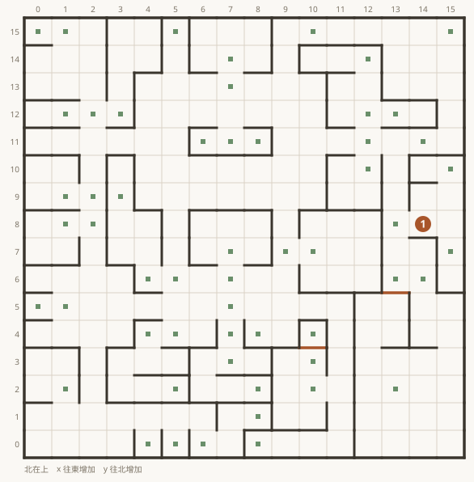
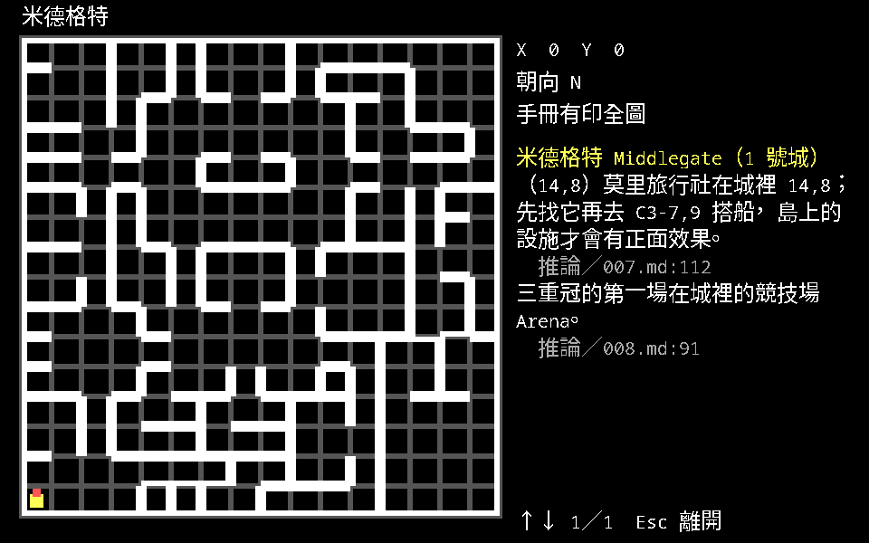

魔法門 II：攻略與中文說明書
《Might and Magic II: Gates to Another World》1988 年由 New World Computing 發行。 台灣玩家當年拿到的是軟體世界研究開發中心代理的三片裝，附一本上下冊的中文說明書； 攻略則要等《軟體世界》雜誌從第 005 期開始連載，一路寫到第 010 期的完結篇。 那些紙本現在很難找了。
這個站把兩份東西整理成看得下去的樣子：《軟體世界》的六期連載整理成按地點排列的攻略，
珍017 中文說明書九十三頁整理成分章的參考書。地圖不是掃描，是從原版的
MAP.DAT 重畫出來的，每一格都對得上遊戲裡的座標。
兩份資料的來歷
| 《軟體世界》連載 | 珍017 中文說明書 | |
|---|---|---|
| 作者 | 黃啓禎（第 010 期「無敵常勝軍」另由丁彥如執筆） | 文字編輯林宏亮、黃啟禎 |
| 期別／頁數 | 第 005–010 期，MM2 頁面共約 30 頁 | 上下冊加地圖冊，93 頁 |
| 內容 | 路線、謎題答案、怪物數值、物品總表 | 規則、屬性、職業、法術、地圖冊 |
| 這個站怎麼用它 | 拆成 46 個地點、280 條提示，每條標出處 | 重排成七章，配 remake 的實際畫面 |
兩份都是二手資料。它們是人工轉抄的，已知有誤植；跟原版程式的實際行為衝突時， 以原版為準。衝突的部分沒有偷偷挑一邊，全部列在矛盾與勘誤。
地圖是重畫的

MAP.DAT ＋ ATTRIB.DAT 畫出
地圖 0 牆 186 面、門 3 道、看不見的屏障 0 面、事件格 56 格
- 114,8莫里旅行社在城裡 14,8；先找它再去 C3-7,9 搭船，島上的設施才會有正面效果。推論／007.md:112
- 沒有座標的提示
- 三重冠的第一場在城裡的競技場 Arena。推論／008.md:91
上面左邊那張是 1 號城米德格特。牆、門、事件格的位置直接讀原版的
MAP.DAT 與 ATTRIB.DAT 畫出來，所以它跟你在遊戲裡走的是同一份資料，
不是照著雜誌重描的。右邊是同一張圖在 remake 裡按 M 的畫面，
兩張對著看就知道格子在遊戲裡長什麼樣。
橘色的圓圈是攻略提示的位置，編號對應圖下面那份清單。沒有座標的提示不上圖 —— 編一個看起來合理的座標比不標更糟，讀者會照著去找。
- 實牆
- 門（上鎖）
- 屏障：擋路但畫面上看不見
- 事件格
- 吸光的格子
- 攻略提示（編號對應正文）
- 可通行
- 山區（要兩名登山家）
- 森林（要兩名探險家）
- 水域（要水行術）
從哪裡開始
這個站不對外
內容是別人的著作，這裡只做整理與對照，沒有取得重製授權，所以頁面都掛了
noindex，也沒有對外宣傳。要看原文請找原刊。